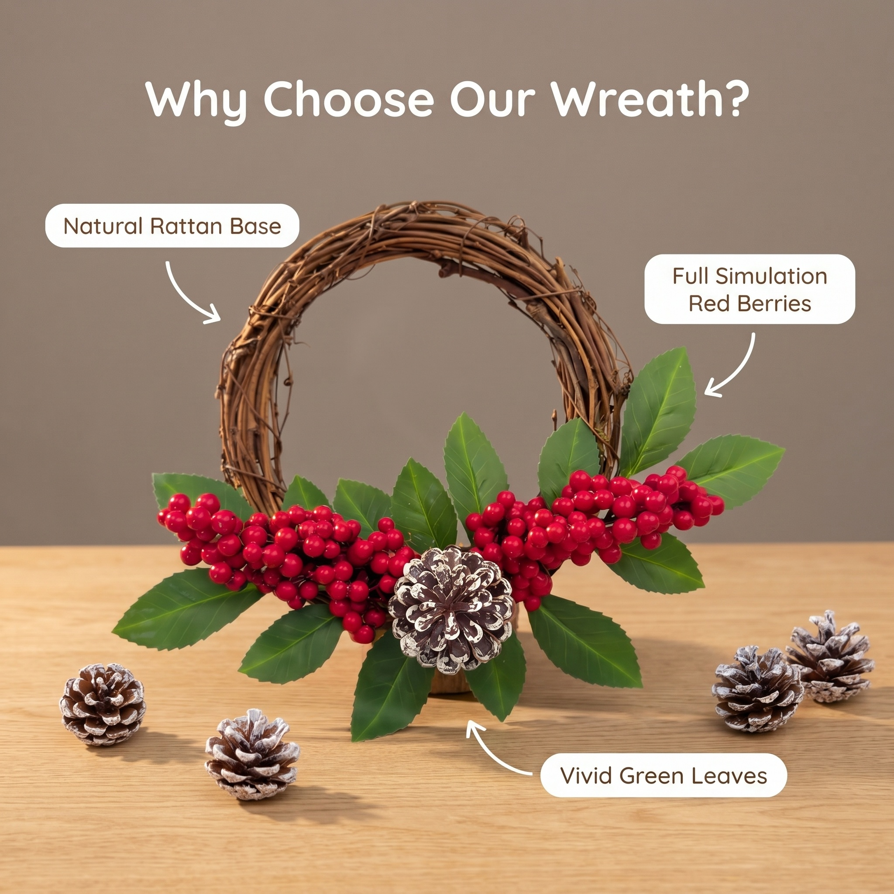
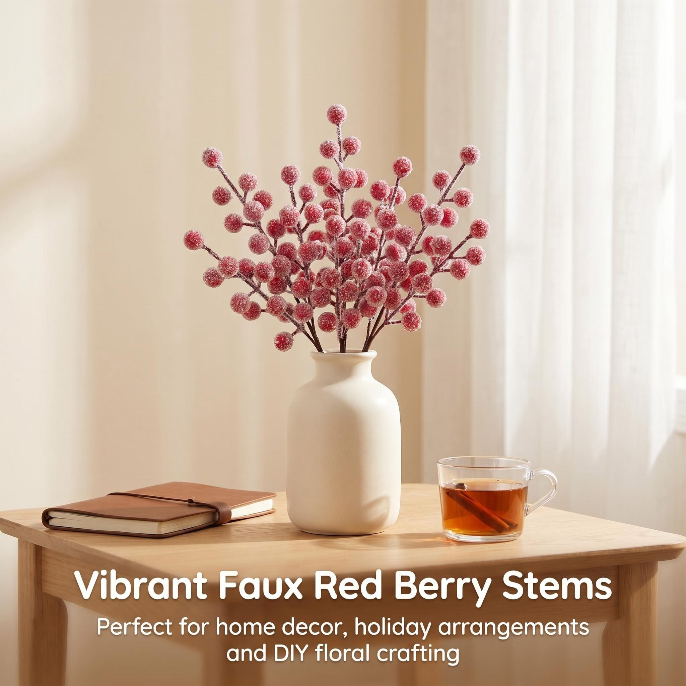

秉持「自然永续，简奢栖居」的理念
Kyson Home，隶属于块循电商，是专注仿真花艺、季节门挂、居家软装装饰的原创美学品牌。 品牌以四季风物与节日氛围为灵感，主打花束、花环、入户门挂、空间装饰摆件等核心品类，融合自然质感与简奢设计，兼顾日常居家、庭院布置、节庆装饰多元场景。 坚持精细做工、持久质感、风格统一的产品理念，以「四季有景，日日生暖」为内核，打造不凋零、可复用、高氛围感的装饰好物。用治愈系花艺美学，温柔装点每一处居家空间，为全球家庭提供低成本、高颜值的软装解决方案。


